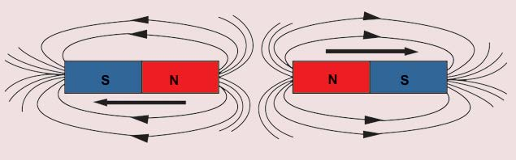

Materials:
Two bar magnets, white paper, iron filings and a table
Procedure
- 1. Spread the iron filings on the white paper.
-
2.
Put the two magnets on the paper with iron filings as seen in Figure 5. Make sure the two like poles of the magnets are facing each other at a close distance.
-
3.
Move one magnet towards the other. What do you see?
- 4. Draw the pattern you have seen in your exercise book and compare it with the one shown in Figure 5.

Results:
Write the results of the experiment you have conducted.
Conclusion:
Write the conclusion of the experiment you have conducted.
Experiment 3: Exploring the pattern of magnetic lines of force between unlike poles of magnets
Aim:
Investigating the pattern of magnetic lines of force between unlike poles of magnets
Materials:
Two bar magnets, white paper, iron filings and a table
Procedure
- 1. Spread the iron filings on the white paper.
-
2.
Set up the two magnets on the white paper with iron filings. Make sure the two unlike poles of the magnets are facing each other at a close distance.
-
3.
Move one bar magnet towards the other. What do you see?